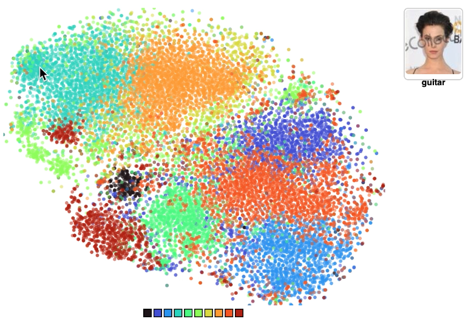
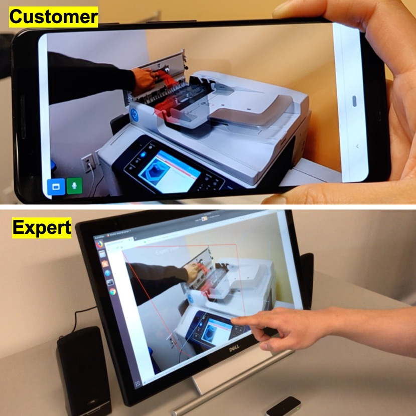
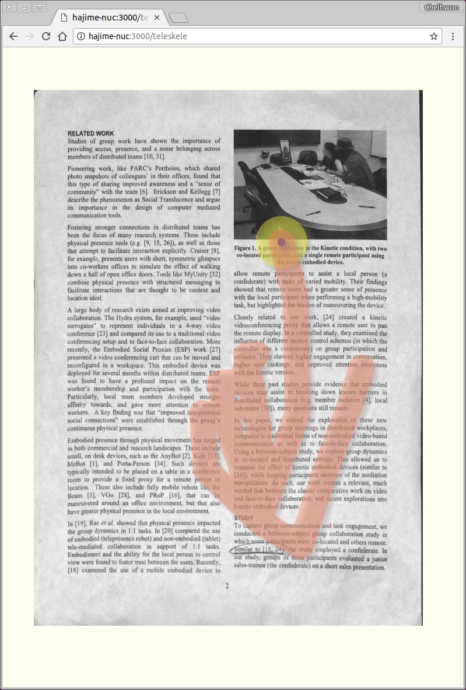
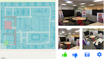
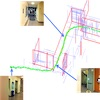
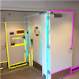
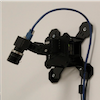

Face-to-Music Translation
CVPR Sight and Sound Workshop, 2021
Computer Vision Researcher
I am a computer vision researcher with 10 years of industry R&D experience at the intersection of 3D geometric vision, generative modeling, and applied perception for human-centered systems — spanning reconstruction and localization, digital human / 3DCG synthesis, and AR / spatial computing. I received my Ph.D. in Electrical Engineering from the University of California, Santa Cruz in 2016, advised by Professor Roberto Manduchi in the Computer Vision Lab.







